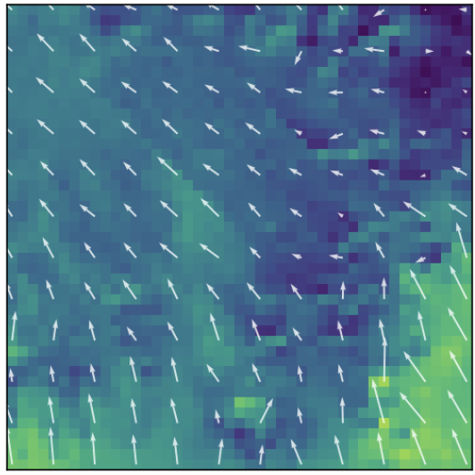
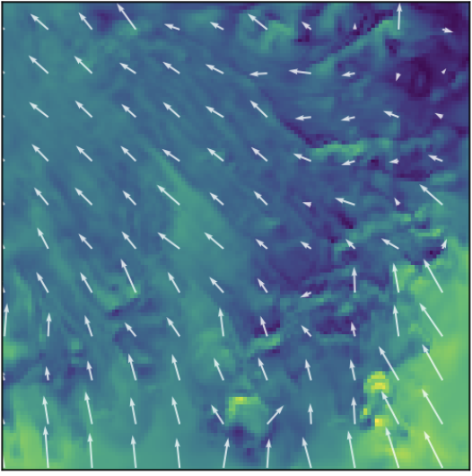
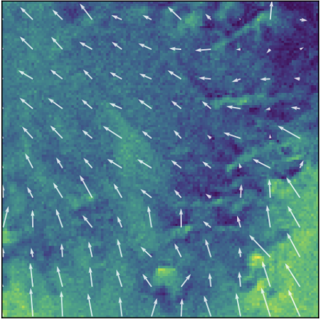

城市化加速，城市微气象环境日益受到关注：
WRF中尺度气象模式采用嵌套降尺度逐步提高分辨率：
三类降尺度方法对比：
| 方法 | 精度 | 速度 | 局限 |
|---|---|---|---|
| 动力降尺度 嵌套WRF/LES/CFD |
高 | 极慢 | 计算资源巨大 |
| 统计降尺度 回归/插值 |
低 | 快 | 无法恢复亚网格结构 |
| 深度学习降尺度 本研究 |
较高 | 快 | 需高质量训练数据 |
深度学习降尺度前沿：
三个风分量
| 分量 | 方向 | 量级 |
|---|---|---|
| U | 东西(水平) | 数~十几 m/s |
| V | 南北(水平) | 数~十几 m/s |
| W | 垂直 | 0.01~0.3 m/s |
6个垂直层级
| 层级 | 高度 | 应用意义 |
|---|---|---|
| ml0 | ~10m | 气象观测高度 |
| ml1 | ~30m | 建筑平均高度 |
| ml2 | ~50m | 城市冠层顶 |
| ml3 | ~70m | 小型风机 |
| ml5 | ~120m | 大型风机轮毂 |
| ml10 | ~300m | 边界层中上部 |
Research Gap
现有工作（FuXi-CFD等）基于判别式模型，生成式模型（扩散/薛定谔桥）在三维风场领域几乎空白。
FuXi-CFD仅用地形+粗糙度，未利用WRF提供的辐射通量、感热/潜热、边界层高度等驱动风场的关键物理过程。
城市风场有内在随机性（湍流），判别式模型只给确定性输出，无法量化不确定性。
Motivation & Innovation
总体目标：基于薛定谔桥生成式框架，利用WRF模式输出与地表物理条件，实现三维城市风场快速超分辨率重建。
风场 = 大尺度驱动 + 地形强迫 + 热力驱动 + 边界层过程。模型通过10个变量"理解"物理环境：
| 类别 | 变量 | 含义 | 作用 |
|---|---|---|---|
| 地形 | HGT | 地形高度 | 机械抬升/绕流 |
| LU_INDEX | 土地利用 | 粗糙度 | |
| 热力 | T2 | 2m气温 | 热力环流 |
| TSK | 地表温度 | 感热驱动源 | |
| 辐射 | SWDOWN | 短波辐射 | 对流驱动 |
| GLW | 长波辐射 | 夜间冷却 | |
| 通量 | HFX | 感热通量 | 热对流动力 |
| LH | 潜热通量 | 蒸发冷却 | |
| 动力 | PSFC | 地面气压 | 气压梯度力 |
| PBLH | 边界层高度 | 混合范围 |
| 参数 | 值 |
|---|---|
| UNet 输入/输出 | 28ch → 18ch |
| inner_channel | 32 |
| res_blocks | 1 |
| 空间尺寸 | 128×128 |
| 训练轮次 | 400 epochs |
| 学习率 / batch | 0.0005 / 2 |
| 训练时间 | ~22.75 小时 |
| 最佳loss | 0.0410 |
初步观察
水平风场(U,V) · ml0层(~10m) · 色底=风速，白色箭头=风向



LR场明显模糊 → HR场有精细空间结构 → 模型预测恢复了大部分高分辨率细节与风向分布
当前局限
inner_channel=32, res_blocks=1 — 18通道输出需要更大容量
180×180 resize至128×128训练，存在空间信息损失
W量级比U/V小1-2个数量级，在统一L2 loss中被主导
LR由HR降采样模拟，非真实低分辨率输入(d03数据已删除)
目前仅训练loss和定性可视化，缺少RMSE/MAE/SSIM等
改进方向
近期改进
| 改进 | 操作 | 预期 |
|---|---|---|
| 增大容量 | inner_ch→64, res→2 | 提升18ch学习能力 |
| 空间优化 | 128²→192² | 192>180，不丢信息 |
| 混合精度 | AMP (fp16) | 加速2-3× |
| 定量评估 | 逐通道指标 | 客观评价 |
中长期方向
| 方向 | 说明 |
|---|---|
| W分量加权 | loss中W通道增加权重(×10)或独立标准化 |
| 基线对比 | bicubic + 回归UNet baseline |
| 消融实验 | 量化条件变量对3D风场贡献 |
| 物理约束 | 散度约束(质量守恒)作为正则项 |
| 频域损失 | 参考FuXi-CFD提升高频细节 |
| 增加层数 | 6层→更多层，密集覆盖边界层 |
已完成工作
T2单通道，1001 epochs，3组消融实验，验证框架可行性
U10/V10双通道，400 epochs，验证向量场处理能力
6层×U/V/W=18通道 + 10条件变量，400 epochs，loss=0.0410
增大模型容量、空间尺寸，建立定量评估
下一步工作计划